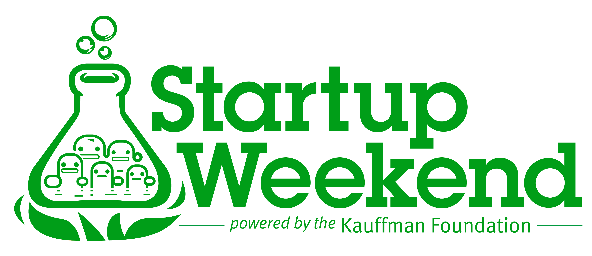

ExpoGIT
#mejorandocurso
Una iniciativa de Generación Mejorandola
Bienvenidos Comunidad de Mejorandola
Les presentamos un recurso de material de apoyo para que los estudiantes del curso en Mejorandola puedan desarrollar su talento Web en el popular sistema de control de versiones GIT y en la comunidad GitHub.
Si eres estudiante del curso y te gustaría complementar más información sobre este material de apoyo, envía un "Pull Request" al repositorio y con todo gusto mejoramos la documentación.
Apoyos y Colaboración
Cóntáctanos para que sigamos exponiendo más temas tecnológicos. Esto es una iniciativa de Generación Mejorandola.
¿Te gustó el documento? Compártelo y manda un tweet con el hashtag #mejorandola . Estén pendientes de sus próximos cursos para material adicional.
Disfrútenlo.
Guías de Estudio
Para complementar y perfeccionar GIT, Christian Van Der Henst nos dá una explicación impecable en la utilización de esta tecnología.
GIT + Github - El futuro de la Colaboración Web
"Trabajar en equipo". La tendencia de los próximos años va vinculada con compartir y colaborar. Github está creciendo enormemente y sus gráficas no mienten.

Con cerca de 3 millones de usuarios y casi 5 millones de repositorios, GIT se ha posicionado por su gran bondad de compartir y agilizar los proyectos Web.
¿Qué está ocurriendo con la Web?
En este momento, empresas de todo el planeta están buscando desesperadamente personas con perfiles que incluyan tecnología.
La nueva ola de los Startups y el emprendimiento digital también tiene bastante demanda. Incluso en las iniciativas como Startup Weekend ó incubadoras tecnológicas como el Founder Institute insisten en que el equipo es vital y de diferentes disciplinas, principalmente profesionales Web (Diseño, Programación, Marketing Digital, Comunicación, etc.)
Todo parece increíble, PERO, al mismo tiempo hay muy pocos profesionales de la Web... al menos por ahora.
Los nuevos profesionales Web deben saber trabajar en equipo
Esta gran demanda y poca oferta ha obligado a las empresas ha buscar talento fuera del país, de forma internacional. Por lo tanto, tomar en cuenta que tu próxima aventura laboral sea a distancia no será tan radical en unos años.
En un futuro saber llevar un proyecto sin estar físicamente ahí ya no será un "Plus", será un requisito. Debemos prepararnos desde ahora.
A partir de esta necesidad, ¿cómo nos organizamos y colaboramos?
A través de los Sistemas de Control de Versiones y las comunidades. Éstos fueron creados para gestionar código, historial de avances y sobre todo, compartir el proyecto.
Instalar GIT
Para poder instalar GIT en tu computadora, lo primero que tienes que hacer es entrar a esta página:
Nos vamos a la sección "Downloads" y escogemos nuestro sistema operativo.
Algo muy importante es que se está instalando GIT para trabajar en consola, NO estamos instalando los clientes (el cual incluyen interfaces de usuario amigables para gestionar los proyectos).
Para trabajar con los clientes de GIT(incluidos los de Github), hay una sección llamada "GUI Clients", ahí ustedes pueden descargar los clientes para una mejor gestión de su código sin utilizar supuestamente la terminal.
Sin embargo, recomiendo mucho aprender a utilizar GIT en la terminal debido a que los clientes pueden en algún momento tener un conflicto entre archivos y se le pide al usuario que lo resuelva a través de la terminal.
Es como aprender a manejar un auto en automático y estándar. Si te vas directo al automático, pierdes la oportunidad de manejar otro tipo de vehículos, uno nunca sabe cuando necesitarás la habilidad de utilizar las velocidades.
¿Está GIT instalado?
Para confirmar que GIT esté totalmente listo para trabajar, abrimos nuestra terminal ó consola y después ejecutamos el siguiente comando:
$git --version
git 1.8.0.3
¡A configurar!
Una vez instalado, debemos de configurar GIT, con el fin de posteriormente vincularlo con GitHub, además es nuestra firma de autor a todos los movimientos que hagamos.
$git config --global user.name "Miguel Nieva"
$git config --global user.name "miguelnieva@conexionew.com"
El comando "config" es para hacer cambios dentro del archivo ".gitconfig", el cual guarda TODA tu información y configuración de GIT.
En la parte de "--global", significa que estás realizando cambios de GIT sobre la configuración de tu usuario en tu Sistema Operativo. Como dato extra, se puede configurar a nivel sistema que afecta a todos los usuarios y a nivel proyecto, que sólo afecta al proyecto en cuestión.
Pero no te preocupes, "--global" es la que más vamos a usar :).
Finalmente tenemos "user.name" que significa el nombre usuario y "user.email" que significa el correo electrónico (es importante que coloques el correo electrónico que usas con Github para que se vincule con la cuenta).
Verifica tus datos con este comando:
$git config --list
user.name=Miguel Nieva
user.email=miguelnieva@conexionew.com
Usar GIT Help
Para conocer TODO lo que puedes hacer con GIT, este comando te permite ver una descripción completa sobre todos los comandos y funciones de GIT
$git --help
Como podrás observar, puedes hacer combinaciones para conocer la descripción de cada comando. Por ejemplo:
$git --help add
Como podrás observar, al estar dentro de la terminal, la manera de moverte será tecleando:
- "f" - Forward o adelante
- "b" - Backward o atrás
- "q" - Salir
Instalar llave SSH
La llave SSH te va a permitir conectarte con tu cuenta de Github. Una vinculación de tu área local(tu ordenador en este caso) y el área remota(los servidores de Github).
Por lo tanto para poder conectarte debes de teclear:
$ssh-keygen
Generating public/private rsa key pair.
Enter file in which to save the key (/home/you/.ssh/id_rsa):
Le das ENTER y después te pedirá que agregues una contraseña, el cual es recomendable:
Enter passphrase (empty for no passphrase): [Contraseña]
Enter same passphrase again: [Repetir contraseña]
El cual te aparecerá un mensaje parecido a este:
Your identification has been saved in /home/you/.ssh/id_rsa.
Your public key has been saved in /home/you/.ssh/id_rsa.pub.
The key fingerprint is:
01:0f:f4:3b:ca:85:d6:17:a1:7d:f0:68:9d:f0:a2:db tucorreo@tucorreo.com
Después, para ver la llave SSH, vas a teclear:
$cd .ssh
$cat id_rsa.pub
Finalmente, copiarás toda la llave desde "ssh-rsa" hasta el final y la copiarás en tu perfil de Github -> Account Settings -> SSH Keys y finalmente le darás "Add SSH Key" para pegarlo. Debe de estar completo y exacto.
Comprobar llave SSH
Para comprobar que nuestra llave está instalada y tenemos la vinculación de Github con nuestra área local, tecleamos en la consola:
ssh -T git@github.com
The authenticity of host 'github.com (207.97.227.239)' can't be established.
RSA key fingerprint is 16:27:ac:a5:76:28:2d:36:63:1b:56:4d:eb:df:a6:48.
Are you sure you want to continue connecting (yes/no)?
Esto significa que está todo perfecto. Le das "Yes" y después te saldrá este mensaje de éxito:
Hi username! You've successfully authenticated, but GitHub does not
provide shell access.
Descarguemos un Repositorio
Vamos a ir un repositorio para descargarlo; en este caso usaremos el de "expogit" y le daremos "Fork" el cual hace un repositorio exacto del proyecto que estás copiando dentro de tu perfil.
A comparación de "Clone", Fork te permite interactuar con un repositorio personal del proyecto para posteriormente contribuir con tu código a través de un botón llamado "Pull Request" que veremos pronto. Si sólo deseas copiarlo, puedes utilizar "Clone".
Después, crearemos una carpeta dentro de nuestro disco duro y le pondremos el nombre de "expogit".
Iremos a la consola y teclearemos:
$cd ~/expogit
#Donde hayas colocado la carpeta
$git init
# Es un comando que significa iniciar GIT en este proyecto,
el cual empezará a rastrear todos los movimientos y cambios que hagas.
$git remote add origin git@github.com:MiguelNieva/expogit.git
# Creamos el enlace remoto del repositorio de Github con el
repositorio en local.
$git pull
# Traemos toda la información que se encuentra en el repositorio,
incluyendo todas las ramas, si necesitas traer una rama específica
puedes agregar "origin master" ó por ejemplo "origin gh-pages"
si hay una página para ello.
Con esto, ya tenemos en nuestra carpeta y en un nuestro perfil de Github, una copia completa del repositorio del proyecto.
Hacer cambios y proponerlos al proyecto principal
Una vez que hacen cambios dentro de la carpeta de su repositorio en local(en su ordenador), podemos observar todo eso con el comando:
$git status
# On branch gh-pages
# Changes not staged for commit:
# (use "git add ..." to update what will be committed)
# (use "git checkout -- ..." to discard changes in working directory)
#
# modified: index.html
#
# no changes added to commit (use "git add" and/or "git commit -a")
Como podrán observar, hay un cambio de modificación en el archivo "index.html". La ventaja de GIT es que te permite escoger cuáles archivos quieres preparar para subirlos al repositorio. Puede que no quieras subir todos los archivos y es válido.
Antes de subirlos al repositorio, se te pide que los pongas en un área llamada "stage", que significa estacionarlos para posteriormente enviarlos a tu repositorio en LOCAL a través de un registro de cambios llamados "commits". Después, estos commits son los que enviaremos finalmente al repositorio en GITHUB.
Primero, vamos a preparar el archivo, escríbiremos en la consola:
$git add index.html
$git status
# On branch gh-pages
# Changes to be committed:
# (use "git reset HEAD ..." to unstage)
#
# modified: index.html
#
A diferencia del otro mensaje, te dice que los cambios ya pueden subir al repositorio a través de un comando que se llama "commit". Vamos a ejecutarlo:
$git commit -m "Index modificado"
El "-m" significa mensaje, que es el título de tu commit. Y entre comillas escribimos el título.
En este momento, acabamos de guardar un registro de cambios del repositorio en tu disco duro, en local. Ahora, hay que enviar esos cambios al repositorio de GitHub para que agregue, modifique o elimine archivos del repositorio de tu perfil y esté sincronizado con tu repositorio en local. Adicionalmente, todo mundo lo podrá ver y tendrás tu código a salvo (si explota tu computadora, perderías todo lógicamente, por lo que "en la nube" es mejor).
Subimos a Github el repositorio de nuestro disco duro al repositorio de Github:
$git push origin master
# Si lo vamos a subir a otra rama (branch), cambiaremos la
# palabra master por el nombre de la rama.
Y listo, verás cambios en tu repositorio en Github.
Colaborar con un proyecto
La bondad de Github no es sólo almacenar código, si no también colaborar. De acuerdo al tema anterior, hiciste un "fork" del repositorio principal en tu perfil. Todos los cambios que estuviste haciendo están almacenados en el repositorio de tu perfil, NO en el repositorio del autor principal, por lo que para enviar propuestas de cambio, existe un botón llamado "Pull Request", el cual propone cambios al repositorio del autor principal a partir de tu repositorio en GitHub.
Obviamente, el autor no sabe qué código tienes en tu disco duro; lo único que podrá ver es el código que tienes en el repositorio "clon" del proyecto en tu perfil, por lo que al presionar "Pull Request" en la página del proyecto principal, te pedirá que selecciones qué rama y modificaciones quieres presentarle al autor para que él decida si incorporarlo al repositorio principal o simplemente rechazar tus cambios.